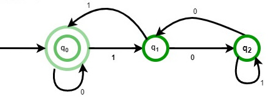
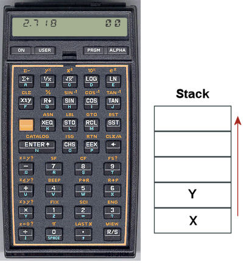

foldr, scanr, foldl, scanl. Вычислите несколько примеров в интерпретаторе:foldr (+) 0 [1,2,3] foldr (+) 10 [1,2,3] foldr (-) 0 [1,2,3] foldr (-) 10 [1,2,3] foldl (-) 0 [1,2,3] foldl (-) 10 [1,2,3] scanr (+) 0 [1,2,3] scanl (-) 0 [1,2,3]
fromBase, транслирующую список цифр в заданной системе счисления в целое число:
Убедитесь в том, что эта функция является обратной функцииfromBase 10 [1,2,3] ==> 123 -- это целое число fromBase 2 [1,1,0,1] ==> 13
toBase из предыдущего занятия.
scanl.minCount :: Ord a => [a] -> (a, Int) minCount [] = error "List is empty" minCount (x:xs) = foldl count _ xs where count (r, c) x | x == r = _ | x < r = _ | otherwise = _
Свёртка (катаморфизм) — это абстракция последовательной обработки индуктивных данных. Это означает, что любую задачу, сводимую к обработке списка элемент за элементом можно решить при помощи свёртки.
length, map и filter.foldr и foldl. map, filter, reverse, any, all, length.Очень широкий класс задач программирования и автоматизации самых разнообразных процессов решается с помощью автоматного подхода. Автоматом называют объект, имеющий внутреннее состояние, который принимает поток сигналов, событий или символов, который он последовательно обрабатывает. Автомат определяется функцией перехода, задающей переход из одного состояния в другое в зависимости от пришедшего сигнала или события и, возможно, выполняющей какие-то действия. Вот некоторые области применения автоматного подхода:
Самый простой вычислитель -- конечный атомат, который можно реализовать как программным способом, так и аппаратно. Набор его возможных состояний конечен и известен на этапе его разработки. Преимущества конечных автоматов состоят в исключительной надёжности и минимальности необходимых для работы вычислительных мощностей. Их редко приходится писать вручную, чаще всего они играют роль внутреннего представления прекомпилированных алгоритмов и программ.
Автомат полностью определяется набором допустимых состояний, набором допустимых входных сигналов (этот набор иногда называют алфавитом), функцией перехода, начальным состоянием, а также состояниями аварийной остановки и успешного завершения работы. Давайте определим тип для произвольного автомата:
Определение типа выглядит длинновато и кажется сложным, но на самом деле эта запись точно описывает необходимые для конечного автомата элементы. Здесь параметры типаdata Automat s i = Automat { alphabet :: [i] -- допустимые символы , delta :: s -> i -> s -- функция перехода , start :: s -- начальное состояние , stop :: [s] -- останавливающие состояния , final :: [s] -- конечные состояния }
s и i задают типы для возможных состояний автомата и входных данных соответственно.
Определим в качестве примера конечный автомат, который вычисляет остаток от деления на 3 числа, записанного в двоичной форме. Его схема представлена на рисунке.

Этот автомат принимает поток нулей и единиц, соответствующих двоичному представлению числа, прочитывая их слева направо, и на каждом шаге переходит в одно из трёх состояний, соответствующих остатку от деления числа на 3. Вот как можно определить этот конечный автомат:
mod3 :: Automat Int Int mod3 = Automat [0,1] f 0 [] [0,1,2] where f 0 0 = 0 f 0 1 = 1 f 1 0 = 2 f 1 1 = 0 f 2 0 = 1 f 2 1 = 2
scanFSM, которая будет запускать автомат для произвольного потока данных, возвращая поток этих же данных, сопровождаемsх состояними автомата:
Проверьте правильность работы автоматаscanA :: (Eq s, Eq i) => Automat s i -> [i] -> [(i, s)] scanA fsm xs = takeWhile (not . halt) $ zip inputs states where inputs = _ -- поток допустимых символов states = _ -- поток состояний автомата halt = _ -- условие остановки работы
mod3 на последовательности натуральных чисел от 0 до 10.
scanA несложно написать два специальных сполнителя для работы с конечными автоматами: runA, возвращающий только последнее состояние машины и testA, который возвращает значение типа Bool, и позволяет использовать автоматы как распознаватели последовательностей (строк).Протестируйте их действие с помощью определённых выше конечных автоматов. Проверьте корректность работы всех этих функций на бесконечных потоках.runA :: (Eq s, Eq i) => Automat s i -> [i] -> s testA :: (Eq s, Eq i) => Automat s i -> [i] -> Bool
printA для вывода последовательности шагов работы автомата.
Вывести строку можно с помощью функцииλ> printA mod3 [1,0,1,0,1] 1 1 0 2 1 2 0 1 1 0
putStrLn, а применить её к элементам списка функцией mapM_. Проверьте с её помощью правильность работы автомата brackets.Конечные автоматы имеют существенное ограничение -- число их состояний конечно и должно быть известно на этапе пректирования. Это сильно снижает их вычислительную мощность. Если заменить набор конечных состояний на изменяемый стек, то можно получить более мощный вычислитель: автомат со стековой памятью. Такой автома уже способен производить вычисления конечных арифметических выражений произвольной сложности, разбирать и транслировать широкий класс искусственных языков, которые называются контекстно-свободными.
Классический пример задачи, которую может решить стековый автомат, но не сможет конечный автомат -- это распознавание сбалансированного скобочного выражения. К сбалансированным выражениям относятся, например такие: (), (()), ()(), (()((())())) и т.п., а вот несколько примеров несбалансированных выражений: )(, (, (()(()(.
Автомат, распознающий их может быть определён нами так:
brackets = Automat "()" f [] [] [[]] where f ('(' : s) ')' = s f s x = x:s
brackets так, чтобы он был способен распознавать правильные скобочные выражения, содержащие три различных вида скобок (), [], {}.scanA) таким образом, чтобы пустой список допустимых символов в определении автомата означал произвольные входные символы. После чего перепишите автомат brackets так, чтобы в скобочных выражениях могли, кроме скобок, встречаться любые символы, как в примерах:
"(defun (abs x) (if (< x 0) (- x) x)))" "[(2+33)/(4-6*(12-7))]^4" "[(1, 2), (3, 4), (2, 5)]"
Со времени появления калькуляторов HewlettPackard и MK-36 прошло более сорока лет. Они отличались от обыкновенных, во-первых, тем, что были стековыми, а во-вторых -- программируемыми. И это не случайно. Стековые вычисления очень хорошо подходят для написания несложных программ для примитивного вычислителя. Принцип вычислений, который они реализовали остался актуален и используется тогда, когда есть необходимость производить вычисления на очень ограниченных вычислительных мощностях. В наше время стековые языки программирования нашли применение в виртуальных машинах: это языки для JVM для платформы Java и вычислителя CLR для .Net, для управления роботами: язык FORTH, и, наконец, язык программирования для управления принтерами PostScript. Всё это необычные, предельно простые языки с примитивной грамматикой, программы на которых с непривычки непросто писать, но необычайно просто выполнять.
Мы реализуем в форме стекового автомата простейший калькулятор, позволяющий вычислять арифметические выражения произвольной сложности. Программы представляют собой выражения, записанные в обратной польской нотации. Обратной польской нотацией (ОПН) называется способ записи арифметических и логических выражений, который совмещает в себе простоту интерпретации с компактностью записи. Единственный недостаток ОПН -- плохая читаемость выражений человеком. Однако, так как эта форма используется, чаще всего, как внутреннее представление вычислений на одном из промежуточных этапов трансляции программ, человеку писать и читать ОПН не приходится.
Отличительной особенностью ОПН является то, что все аргументы расположены перед знаком операции. В общем виде запись состоит из линейной последовательности операндов и знаков операций:
| выражение | запись в ОПН |
1 2 + | |
1 2 3 * + | |
1 2 + 3 * | |
1 2 + 3 4 - * |
Вычисление выражений в обратной польской нотации использует стек. Приведём алгоритм вычисления для стековой машины:
Простейшая его реализация очень изящна и хорошо показывает принцип модульности: задача разбивается на отдельные логически замкнутые части (функции), которые комбинируюясь дают общее решение.
Начнём с описания интерпретации отдельных команд:
команда | стек | результат --------|-------|----------- число n | s | n:s --------|-------|----------- "+" | x:y:s | (x + y):s --------|-------|----------- "*" | x:y:s | (x * y):s --------|-------|----------- "-" | x:y:s | (y - x):s --------|-------|----------- "/" | x:y:s | (y / x):s
words.Обратная польская запись идеальна для вычисления машиной. Она не требует ни скобок, ни приоритета операций, которые появились исторически и не имеют под собой строгой математической основы. Однако, мы вынуждены считаться с традицией и с традиционной инфиксной записью арифметических выражений.
Существует эффективный алгоритм трансляции традиционной формы арифметических выражений в обратную польскую, известный как алгоритм сортировочной станции или алгоритм Дейкстры. Этот алгоритм использует стек и обрабатывая символы из потока ввода формирует поток вывода.
Мы вернёмся к задаче разбора и трансляции арифметических выражения в разделе этого курса, посвящённом комбинаторным методам трансляции. Там эта же задача будет решена более изящным и универсальным образом.